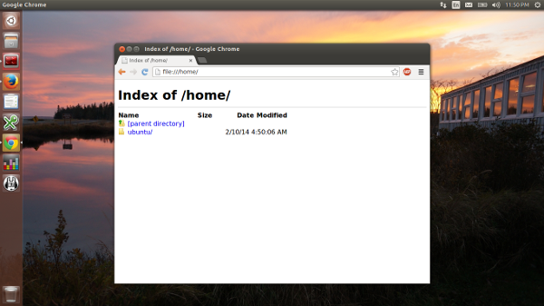

This post uses unprivileged containers, this isn’t an hard requirement but makes a lot of sense for GUI applications. Besides, since you followed the whole series, you have those setup anyway, right?
I’ll be using Google Chrome with the Google Talk and Adobe Flash plugins as “hostile” piece of software that I do not wish to allow to run directly on my machine. Here are a few reasons why:
While what I’ll be describing below is a huge step up for security in my opinion, it’s still not ideal and a few compromises have to be made to make those software even work. Those are basically access to:
But there’s only so much you can do while still having the cool features, so the best you can do is make sure never to run the container while doing sensitive work.
So now to the actual fun. The plan is rather simple, I want a simple container, running a stable, well supported, version of Ubuntu, in there I’ll install Google Chrome and any plugin I need, then integrate it with my desktop.
First of all, let’s get ourselves an Ubuntu 12.04 i386 container as that’s pretty well supported by most ISVs:
lxc-create -t download -n precise-gui -- -d ubuntu -r precise -a i386
Let’s tweak the configuration a bit by adding the following to ~/.local/share/lxc/precise-gui/config (replacing USERNAME appropriately):
lxc.mount.entry = /dev/dri dev/dri none bind,optional,create=dir
lxc.mount.entry = /dev/snd dev/snd none bind,optional,create=dir
lxc.mount.entry = /tmp/.X11-unix tmp/.X11-unix none bind,optional,create=dir
lxc.mount.entry = /dev/video0 dev/video0 none bind,optional,create=file
lxc.hook.pre-start = /home/USERNAME/.local/share/lxc/precise-gui/setup-pulse.sh
Still in that same config file, you’ll have to replace your existing (or similar):
lxc.id_map = u 0 100000 65536
lxc.id_map = g 0 100000 65536
By something like (this assume your user’s uid/gid is 1000/1000):
lxc.id_map = u 0 100000 1000
lxc.id_map = g 0 100000 1000
lxc.id_map = u 1000 1000 1
lxc.id_map = g 1000 1000 1
lxc.id_map = u 1001 101001 64535
lxc.id_map = g 1001 101001 64535
So those mappings basically mean that your container has 65536 uids and gids mapped to it, starting at 0 up to 65535 in the container. Those are mapped to host ids 100000 to 165535 with one exception, uid and gid 1000 isn’t translated. That trick is needed so that your user in the container can access the X socket, pulseaudio socket and DRI/snd devices just as your own user can (this saves us a whole lot of configuration on the host).
Now that we’re done with the config file, let’s create that setup-pulse.sh script:
1 #!/bin/sh 2 PULSE_PATH=$LXC_ROOTFS_PATH/home/ubuntu/.pulse_socket 3 4 if [ ! -e "$PULSE_PATH" ] || [ -z "$(lsof -n $PULSE_PATH 2>&1)" ]; then 5 pactl load-module module-native-protocol-unix auth-anonymous=1 \ 6 socket=$PULSE_PATH 7 fi
Make sure the file is executable or LXC will ignore it!
That script is fairly simple, it’ll simply tell pulseaudio on the host to bind /home/ubuntu/.pulse_socket in the container, checking that it’s not already setup.
Finally, run the following to fix the permissions of your container’s home directory:
sudo chown -R 1000:1000 ~/.local/share/lxc/precise-gui/rootfs/home/ubuntu
And that’s all that’s needed in the LXC side. So let’s start the container and install Google Chrome and the Google Talk plugin in there:
lxc-start -n precise-gui -d
lxc-attach -n precise-gui -- umount /tmp/.X11-unix
lxc-attach -n precise-gui -- apt-get update
lxc-attach -n precise-gui -- apt-get dist-upgrade -y
lxc-attach -n precise-gui -- apt-get install wget ubuntu-artwork dmz-cursor-theme ca-certificates pulseaudio -y
lxc-attach -n precise-gui -- wget https://dl.google.com/linux/direct/google-chrome-stable_current_i386.deb -O /tmp/chrome.deb
lxc-attach -n precise-gui -- wget https://dl.google.com/linux/direct/google-talkplugin_current_i386.deb -O /tmp/talk.deb
lxc-attach -n precise-gui -- dpkg -i /tmp/chrome.deb /tmp/talk.deb
lxc-attach -n precise-gui -- apt-get -f install -y
lxc-attach -n precise-gui -- sudo -u ubuntu mkdir -p /home/ubuntu/.pulse/
echo "disable-shm=yes" | lxc-attach -n precise-gui -- sudo -u ubuntu tee /home/ubuntu/.pulse/client.conf
lxc-stop -n precise-gui
At this point, everything you need is installed in the container.
To make your life easier, create the following launcher script, let’s call it start-chrome and put it in the container’s configuration directory (next to config and setup-pulse.sh):
1 #!/bin/sh 2 CONTAINER=precise-gui 3 CMD_LINE="google-chrome --disable-setuid-sandbox $*" 4 5 STARTED=false 6 7 if ! lxc-wait -n $CONTAINER -s RUNNING -t 0; then 8 lxc-start -n $CONTAINER -d 9 lxc-wait -n $CONTAINER -s RUNNING 10 STARTED=true 11 fi 12 13 PULSE_SOCKET=/home/ubuntu/.pulse_socket 14 15 lxc-attach --clear-env -n $CONTAINER -- sudo -u ubuntu -i \ 16 env DISPLAY=$DISPLAY PULSE_SERVER=$PULSE_SOCKET $CMD_LINE 17 18 if [ "$STARTED" = "true" ]; then 19 lxc-stop -n $CONTAINER -t 10 20 fi
Make sure the script is executable or the next step won’t work. This script will check if the container is running, if not, start it (and remember it did), then spawn google-chrome with the right environment set (and disabling its built-in sandbox as for some obscure reasons, it dislikes user namespaces), once google-chrome exits, the container is stopped.
To make things shinier, you may now also create ~/.local/share/applications/google-chrome.desktop containing:
1 [Desktop Entry] 2 Version=1.0 3 Name=Google Chrome 4 Comment=Access the Internet 5 Exec=/home/USERNAME/.local/share/lxc/precise-gui/start-chrome %U 6 Icon=/home/USERNAME/.local/share/lxc/precise-gui/rootfs/opt/google/chrome/product_logo_256.png 7 Type=Application 8 Categories=Network;WebBrowser;
Don’t forget to replace USERNAME to your own username so that both paths are valid.
And that’s it! You should now find a Google Chrome icon somewhere in your desktop environment (menu, dash, whatever…). Clicking on it will start Chrome which can be used pretty much as usual, when closed, the container will shutdown.
You may want to setup extra symlinks or bind-mount to make it easier to access things like the Downloads folder but that really depends on what you’re using the container for.
Obviously, the same process can be used for many different piece of software.
Quite a few people have contacted me asking about running Skype in that same container. I won’t give you a whole step by step guide as the one for Chrome cover 99% of what you need to do for Skype.
However there are two tricks you need to be aware of to get Skype to work properly:
Set QT_X11_NO_MITSHM to 1
(otherwise you get a blank window as it tries to use shared memory)
Set GNOME_DESKTOP_SESSION_ID to this-is-deprecated
(otherwise you get an ugly Qt theme)
Those two should be added after the env in the launcher script you’ll write for Skype.
Apparently on some NVidia system, you may also need to set an additional environment variable (possibly useful not only for Skype):
LD_PRELOAD=/usr/lib/i386-linux-gnu/mesa/libGL.so.1
And finally, yet another commonly asked one, Steam.
That one actually doesn’t require anything extra in its environment, just grab the .deb, install it in the container, run an apt-get -f install to install any remaining dependency, create a launcher script and .desktop and you’re done. I’ve been happily playing a few games (thanks to Valve giving those to all Ubuntu and Debian developers) without any problem so far.